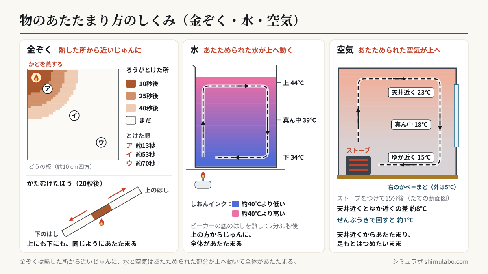
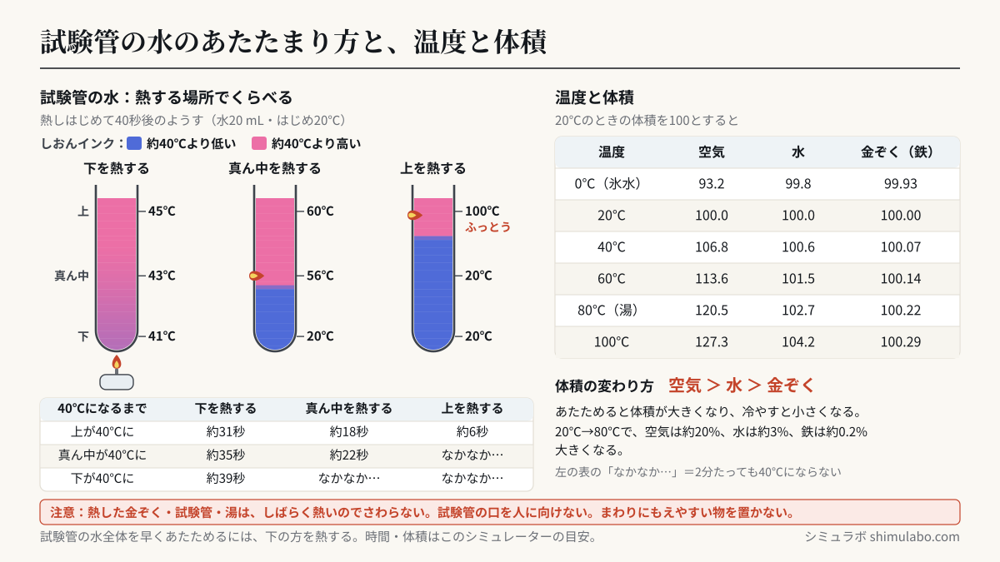

このシミュレーションでわかること
金ぞくは、熱した所から近いじゅんに、まわりへ広がるようにあたたまります。ぼうをかたむけても、上にも下にも同じようにあたたまります。水と空気は、あたためられた部分が上へ動き、上の方からじゅんに全体があたたまります。そのため、試験管の水の上の方だけを熱すると、下の方の水はなかなかあたたまりません。部屋をストーブであたためると、天井近くはあたたかく、足もとはつめたいままになりやすいのも同じしくみです。切りかえで、温度による体積の変わり方（空気 ＞ 水 ＞ 金ぞく）も確かめられます。
授業での使い方
導入：金ぞくはどのようにあたたまる？
「金ぞくの板のかどを熱すると、どのようにあたたまっていくだろう」と問いかけ、あたたまっていく様子を予想して図にかかせます。「金ぞくの板」で熱する場所を指でタップし、ア・イ・ウのどこから先にあたたまるかを確かめます。「見え方」を「ろうをぬった板・ぼう」にすると、ろうがとけていく様子（教科書の実験と同じ見え方）になります。「切れこみあり」の板では、熱が金ぞくのある所を回って伝わることがわかります。
展開：水と空気のあたたまり方
「試験管の水」で、熱する場所を「下」「真ん中」「上」と変えて比べます（試験管の図をタップしても変えられます）。示温インクの色が、下を熱すると上の方から順にピンクに変わり、上を熱すると上の方だけが変わる（下は青のまま）ことから、あたためられた水は上へ動くことに気づかせます。「ビーカーの水」ではおがくずの動きで水の動きを見ます。「部屋の空気」では、線香のけむりの動きと、天井近く・床近くの温度のちがいを確かめ、せんぷうきで空気を回すとどうなるかを考えさせます。
まとめ・発展：温度と体積
「温度と体積」に切りかえ、湯（80℃）や氷水（0℃）につけたときの空気・水・金ぞくの体積の変わり方を比べます。体積の変わり方は空気がいちばん大きく、金ぞくはとても小さいことを、数値と図でまとめます。
児童への問いの例
- 金ぞくのぼうをかたむけて真ん中を熱すると、上のはしと下のはしでは、どちらが先にあたたまるだろう？
- 試験管の水を早く全体あたためるには、試験管のどこを熱するとよいだろう？それはなぜだろう？
- だんぼうをつけた部屋で、天井の近くと足もとでは、どちらがあたたかいだろう？せんぷうきやサーキュレーターを使うのはなぜだろう？
しくみ・解説






図はタップすると大きく表示されます。授業のプリント・スライド・板書計画に自由に使えます（出典「シミュラボ」とページのURLを添えてください）。
言葉の意味（1文で）
- 金ぞくのあたたまり方とは、熱した所から近いじゅんに、金ぞくの中を熱が伝わってあたたまっていくことです。
- 水や空気のあたたまり方とは、あたためられた水や空気が上へ動き、上の方からじゅんに全体があたたまっていくことです。
- 示温インク（しおんインク）とは、温度によって色が変わるインクで、このシミュレーターでは約40℃で青色からピンク色に変わるものとしています。
- 示温テープ（示温シール）とは、温度によって色が変わるテープで、金ぞくなどにはって、あたたまった所を色で見るために使います。
- 体積とは、物がしめている場所の大きさのことで、空気・水・金ぞくは、あたためると体積が大きくなり、冷やすと小さくなります。
あたたまり方の早見表
| 物 | あたたまり方 | こんなことが起きる | 調べ方 |
|---|---|---|---|
| 金ぞく（板・ぼう） | 熱した所から近いじゅんに | 上・下・ななめに関係なく、まわりへ広がる | ろうがとける・示温テープの色が変わる |
| 水 | あたためられた水が上へ動き、上からじゅんに全体へ | 上の方だけ熱すると、下はなかなかあたたまらない | 示温インクの色・おがくずの動き |
| 空気 | あたためられた空気が上へ動き、上からじゅんに全体へ | 部屋の天井近くはあたたかく、足もとはつめたい | 線香のけむりの動き・温度計 |
試験管の水：熱する場所によるちがい（このシミュレーターの目安）
| 熱する場所 | 上が40℃に | 真ん中が40℃に | 下が40℃に | 結果 |
|---|---|---|---|---|
| 下 | 約31秒 | 約35秒 | 約39秒 | 全体があたたまる（上からじゅんに） |
| 真ん中 | 約18秒 | 約22秒 | なかなかあたたまらない | 熱した所より上だけ（下は数分たっても40℃に届かない） |
| 上（水面の近く） | 約6秒 | なかなかあたたまらない | なかなかあたたまらない | 上の方だけ。約30秒で上はふっとうしても、下はつめたいまま |
水20 mL（はじめ20℃）を、アルコールランプでおよそ一定の強さで熱したときの目安です。実際の時間は、火の強さや試験管の太さ、熱する位置で変わります。
温度と体積の早見表（20℃の体積を100とする）
| 温度 | 空気 | 水 | 金ぞく（鉄） |
|---|---|---|---|
| 0℃（氷水） | 93.2 | 99.8 | 99.93 |
| 20℃ | 100 | 100 | 100 |
| 40℃ | 106.8 | 100.6 | 100.07 |
| 60℃ | 113.6 | 101.5 | 100.14 |
| 80℃（湯） | 120.5 | 102.7 | 100.22 |
| 100℃ | 127.3 | 104.2 | 100.29 |
空気は、おさえつけていなければ、温度（℃）に273を足した値（絶対温度）に比例して体積が変わります（シャルルの法則・先生向け）。水は約4℃で体積がいちばん小さくなり、それより高くなると少しずつ大きくなります。鉄の体積は1℃につき約0.0036％大きくなります。同じ大きさの試験管と同じ太さのガラス管で比べると、空気のしるしは数cm、水の先は数mm動くくらいのちがいになります。
先生向けの補足：伝導と対流
金ぞくのあたたまり方は「熱伝導」、水や空気のあたたまり方は「対流」とよばれます（どちらの用語も小学校では扱わず、中学校以降で学びます）。金ぞくのモデルでは、板を2.5 mmのマスに分け、熱拡散率（銅 1.11×10⁻⁴、アルミニウム 9.7×10⁻⁵、鉄 2.3×10⁻⁵ m²/s）を使って熱の広がりを計算しています。鉄は銅の約5分の1の速さでしか熱が広がらないので、同じ場所でもあたたまるのに時間がかかります。水と空気は、熱した所であたためられた水（空気）が上へ動いて上にたまり、そのぶん全体が少しずつ下へおし下げられる「層のモデル」（フィリングボックスモデル）で計算しています。
このシミュレーションで単純化していること
- 金ぞくの熱した所は約300℃に保ち、まわりの空気へ少しずつ熱がにげるものとしています。板の大きさは約10 cm四方、ぼうの長さは約12 cmです。温度の色は示温シールのイメージで、実際の示温テープは決まった温度で色が変わります。
- 水と空気の温度は、同じ高さではどこも同じになるようにした「層のモデル」です。熱した所の上の色の帯は、上へ動くあたたかい水（空気）を表しています。おがくずや線香のけむりの動きは、水や空気の動きを見やすくするためのイメージです。
- 試験管の水は一定の強さで熱するものとし、100℃でふっとうしたあとはそれ以上上がらないものとしています。ビーカーは約3倍、部屋は約10倍の速さで時間が進みます。部屋は、外が5℃で、はじめ10℃の部屋をストーブであたためるものとしています。
- 温度と体積の図では、ガラス管の中の動きを同じ倍率でかいています。金ぞくの変化は小さすぎて、図では見えません。
参考
- 文部科学省「小学校学習指導要領（平成29年告示）解説 理科編」第4学年 A（2）金属，水，空気と温度（小学校学習指導要領解説）
- 小学校理科の教科書（第4学年「もののあたたまり方」「ものの温度と体積」の単元）
- 国立天文台 編『理科年表』（金属の熱伝導率・比熱・線膨張率、水の密度）
- M. Tanaka ほか（2001）Metrologia 38, 301–309（水の密度の式。水の体積の計算に使用）
引用・転載について
本ページのシミュレーション結果・数値は、出典を明記いただければブログ・ニュース記事・SNS・授業や社内資料への引用を歓迎します。事前連絡は不要です。
出典：シミュラボ「物のあたたまり方シミュレーター（金属・水・空気）」 https://shimulabo.com/sims/atatamarikata/よくある質問
- 金属はどのようにあたたまりますか？
- 熱した所から近いじゅんに、まわりへ広がるようにあたたまります。金属のぼうをかたむけて真ん中を熱しても、上にも下にも同じようにあたたまります。
- 水はどのようにあたたまりますか？
- 熱せられてあたたかくなった水が上へ動き、上の方にたまって、上からじゅんに全体があたたまります。示温インクを入れると、上の方から色が変わっていく様子が見られます。
- 試験管の水の上の方を熱すると、下の水はどうなりますか？
- あたたかい水は上にとどまるので、下の方の水はなかなかあたたまりません。上の方の水がふっとうしていても、下の方はつめたいままのことがあります。水全体を早くあたためるには、下の方を熱します。
- 空気はどのようにあたたまりますか？
- 水と同じように、あたためられた空気が上へ動き、上の方からあたたまります。だんぼうをつけた部屋では天井近くがあたたかく、足もとはつめたくなりやすいので、せんぷうきやサーキュレーターで空気を回すと、部屋全体があたたまりやすくなります。
- 温度による体積の変わり方は、空気・水・金属でどうちがいますか？
- どれも、あたためると体積が大きくなり、冷やすと小さくなりますが、変わり方は空気がいちばん大きく、次に水、金属はとても小さいです。20℃から80℃にすると、空気は約20％、水は約3％、鉄は約0.2％体積が大きくなります。
- 示温インクとは何ですか？
- 温度によって色が変わるインクです。水に入れて熱すると、あたたまった所の色が変わるので、水のあたたまり方を目で見ることができます。教科書の実験では、約40℃で青色からピンク色に変わるものなどが使われます。